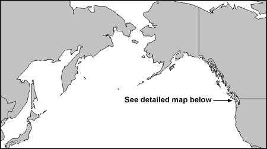
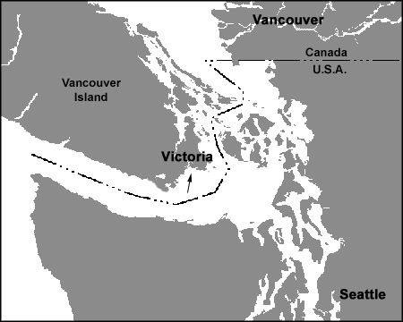

Location
The Esquimalt Graving Dock is located in Esquimalt at 825 Admirals Road – 15 minutes north of Victoria on the southern tip of Vancouver Island.
Victoria is close to the port cities of Vancouver, British Columbia and Seattle, Washington. It's also about 1,200 km, or 600 miles, north of San Francisco, California.
The ice free harbour is strategically located near gateways to Alaska and the Pacific Rim.
Maps

